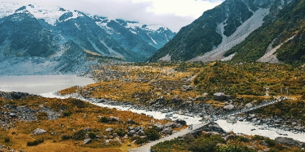

About New Zealand
New Zealand is an island country in the southwestern Pacific Ocean. It consists of two main landmasses—the North Island and the South Island—and over 700 smaller islands. It is known for its stunning landscapes, from mountains and fjords to beaches and rolling green hills.
The country is home to about 5.1 million people and is famous for its Maori culture, friendly people, and outdoor adventures. New Zealand was also the filming location for the Lord of the Rings trilogy.
Quick Facts
- Capital: Wellington
- Largest City: Auckland
- Population: ~5.1 million
- Official Languages: English, Māori, NZ Sign Language
- Currency: New Zealand Dollar (NZD)
- Famous For: Kiwi bird, Lord of the Rings, All Blacks rugby
Weather
Temperature: 14°C
Wind Speed: 12 km/h
Wind Chill: --°C
New Zealand has a mild, temperate climate with moderate rainfall. Summer (Dec-Feb) averages 20-30°C, while winter (Jun-Aug) averages 10-15°C in the north and 0-10°C in the south.